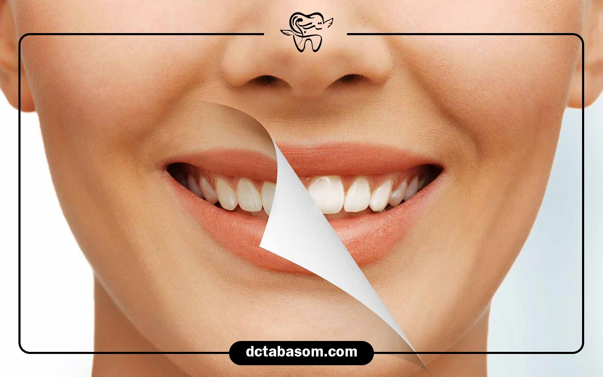
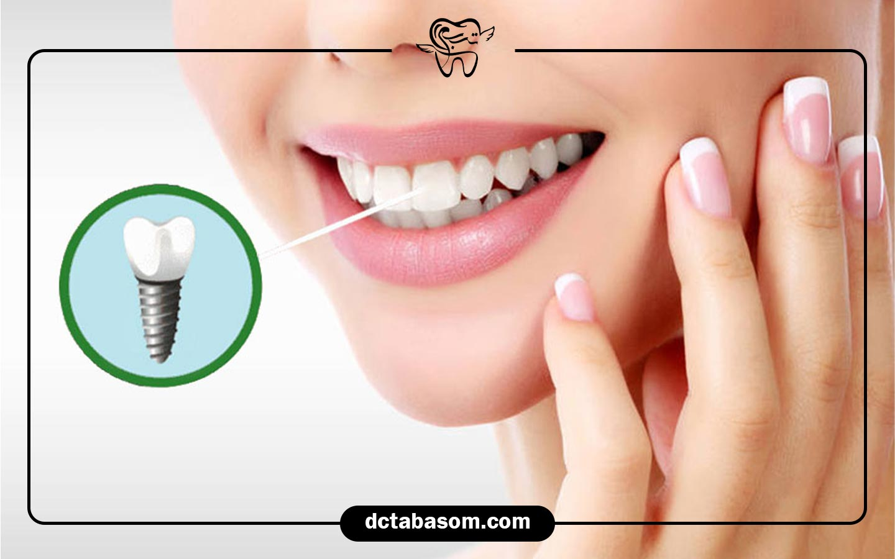

بررسی هزینه های دندانپزشکی در تهران



امروزه سلامت دهان و دندان دیگر فقط یک موضوع بهداشتی نیست، بلکه بخشی از کیفیت زندگی و حتی اعتماد به نفس ما را تشکیل می دهد. با این حال، بسیاری از افراد به دلیل نگرانی از هزینه های دندانپزشکی در تهران از مراجعه منظم به دندانپزشک خودداری می کنند.
در این میان، گزینه هایی مانند دندانپزشکی اقساطی در شهر زیبا توانسته اند تا حدودی این نگرانی ها را کاهش دهند. اما هنوز سوال های زیادی در ذهن بیماران باقی می ماند: چه عواملی بر هزینه های دندانپزشکی تأثیر می گذارند؟ چطور می توانیم با وجود این هزینه ها، درمان مناسبی دریافت کنیم؟ آیا گزینه هایی برای پرداخت آسان تر وجود دارد؟
در ادامه، به طور کامل به بررسی هزینه های دندانپزشکی در تهران می پردازیم و راهکار های موثر و قابل اجرا برای مدیریت این هزینه ها را معرفی می کنیم.
چرا هزینه های دندانپزشکی در تهران بالاست؟
یکی از پرتکرار ترین سوالاتی که بیماران در مراجعه به کلینیک های دندانپزشکی می پرسند این است که چرا هزینه های دندانپزشکی در تهران نسبت به سایر شهر ها یا حتی کشور های همسایه بالا تر است؟ دلایل زیادی برای این موضوع وجود دارد، از جمله:
- تورم و افزایش قیمت تجهیزات دندانپزشکی وارداتی
- افزایش تعرفه خدمات پزشکی در سال های اخیر
- هزینه های اجاره و نگهداری مطب های دندانپزشکی در مناطق مختلف تهران
- تخصص و تجربه دندانپزشک، که طبیعتاً بر تعرفه خدمات تأثیر می گذارد
- نوع مواد مصرفی مورد استفاده در درمان ها (مثل ایمپلنت، کامپوزیت، لمینت و…)
چگونه هزینه های دندانپزشکی در تهران را مدیریت کنیم؟
خبر خوب این است که راه هایی برای کنترل و حتی کاهش این هزینه ها وجود دارد. در ادامه به چند روش مؤثر اشاره می کنیم:
انتخاب کلینیک هایی با امکان پرداخت اقساطی
یکی از گزینه های بسیار مناسب برای کاهش فشار مالی، مراجعه به کلینیک هایی است که امکان پرداخت اقساطی را فراهم می کنند. برای مثال، کلینیک دندانپزشکی تبسم تحت نظر دکتر محمد مهدی بخشیان، با فراهم آوردن طرح های پرداخت منعطف، به بسیاری از بیماران کمک کرده تا بدون نگرانی مالی، درمان های خود را به موقع انجام دهند.
پیشگیری بهتر از درمان پرهزینه
شاید این جمله کلیشه ای به نظر برسد، اما حقیقت دارد: پیشگیری ارزان تر از درمان است. چکاپ های دوره ای، جرم گیری منظم و رعایت بهداشت دهان می تواند از درمان های گران قیمتی مثل عصب کشی یا ایمپلنت پیشگیری کند.
استفاده از خدمات بیمه های تکمیلی
برخی بیمه های تکمیلی بخشی از هزینه های دندانپزشکی در تهران را پوشش می دهند. اگرچه میزان پوشش کامل نیست، اما می تواند کمک خوبی باشد. همیشه قبل از شروع درمان، با بیمه خود هماهنگی لازم را انجام دهید.
مقایسه قیمت ها در مناطق مختلف تهران
گاهی تفاوت هزینه ها در شمال، مرکز و جنوب تهران قابل توجه است. اگرچه همیشه کیفیت با قیمت رابطه مستقیم ندارد، اما می توان با تحقیق دقیق، کلینیکی با خدمات باکیفیت و قیمت منصفانه پیدا کرد.
جدول مقایسه برخی از خدمات رایج دندانپزشکی در تهران
(شاید برای شما جذاب باشد: ایمپلنت اقساطی در غرب تهران)
ویژگی های یک کلینیک مناسب برای مدیریت هزینه های دندانپزشکی در تهران
هنگام انتخاب کلینیک دندانپزشکی، به این موارد توجه کنید تا هم خدمات مناسب دریافت کنید و هم بتوانید هزینه ها را بهتر مدیریت نمایید:
- شفافیت در تعرفه ها و ارائه لیست کامل قیمت ها پیش از درمان
- ارائه خدمات مشاوره رایگان برای انتخاب بهترین مسیر درمان
- در اختیار داشتن تجهیزات مدرن برای کاهش نیاز به درمان های مجدد
- حضور متخصصان در هر حوزه (زیبایی، ایمپلنت، جراحی، اطفال و…)
- امکان پرداخت قسطی، مانند خدمات ارائه شده در کلینیک دندانپزشکی تبسم
نقش تکنولوژی در کاهش هزینه های دندانپزشکی در تهران
پیشرفت تکنولوژی نه تنها کیفیت درمان را افزایش داده، بلکه در برخی موارد موجب کاهش هزینه ها نیز شده است. نمونه هایی از این تأثیر شامل:
- تصویربرداری دیجیتال که خطا را کاهش داده و هزینه بازسازی مجدد را حذف می کند.
- اسکنر های دیجیتال که در پروسه طراحی لبخند دقت را بالا برده و زمان درمان را کوتاه می کند.
- نرم افزار های تشخیص پوسیدگی که به دندانپزشک کمک می کنند درمان دقیق تری ارائه دهد.
چرا نباید درمان دندانپزشکی را به تعویق انداخت؟
گاهی افراد به دلیل بالا بودن هزینه های دندانپزشکی در تهران، درمان را به تعویق می اندازند. اما این کار می تواند هزینه های نهایی را چند برابر کند. یک پوسیدگی ساده که با ترمیم یک میلیون تومانی قابل درمان است، اگر رها شود ممکن است به عصبکشی، روکش و حتی ایمپلنت ختم شود.
علاوه بر هزینه، مشکلات درمان نشده دندان می توانند به بوی بد دهان، درد های شبانه، عفونت و حتی مشکلات قلبی منجر شوند. بنابراین، اگر به سلامت خود اهمیت می دهید، درمان را جدی بگیرید و از راهکار های مالی موجود استفاده کنید.
تاثیر موقعیت جغرافیایی کلینیک بر هزینه های دندانپزشکی در تهران
یکی از عواملی که به طور مستقیم بر هزینه های دندانپزشکی در تهران اثر می گذارد، موقعیت جغرافیایی کلینیک است. معمولاً کلینیک هایی که در مناطق شمالی یا لوکس تر شهر قرار دارند، به دلیل هزینه های بالا تر اجاره، پرسنل و حتی نوع مراجعان، تعرفه های بیشتری نیز برای خدمات خود در نظر می گیرند.
در مقابل، برخی کلینیک ها در مناطق مرکزی یا غربی تهران، با حفظ کیفیت خدمات، هزینه های منطقی تری ارائه می دهند. انتخاب هوشمندانه موقعیت کلینیک می تواند بدون کاهش کیفیت درمان، فشار مالی را به طور چشمگیری کاهش دهد. بنابراین توصیه می شود هنگام انتخاب مرکز درمانی، تنها به ظاهر یا تبلیغات توجه نکنید و موقعیت جغرافیایی را نیز در تصمیم گیری لحاظ نمایید.
کلام آخر
مدیریت هزینه های دندانپزشکی در تهران، گرچه چالش بر انگیز است، اما با آگاهی و انتخاب هوشمندانه امکان پذیر خواهد بود. استفاده از خدمات اقساطی، مراجعه منظم، انتخاب کلینیک های با تعرفه مشخص و بهره گیری از بیمه های تکمیلی، همگی روش هایی مؤثر برای عبور از این چالش هستند.
اگر به دنبال شروع یک درمان باکیفیت و در عین حال مقرون به صرفه هستید، انتخاب مراکز حرفه ای مانند کلینیک دندانپزشکی تبسم می تواند مسیر را برای شما هموار کند.
به خاطر داشته باشید، هیچ چیز به اندازه لبخندی سالم، ارزشمند نیست. پس از امروز برای آینده دندان های خود برنامه ریزی کنید.